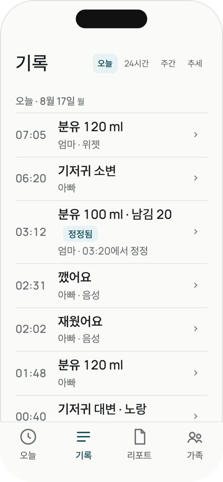

어떻게 남나요
앱이 하는 일은 넷이에요. 전부 지금 앱에 있는 것만 적었어요.
1. 한 번 누르면 저장
홈의 버튼 여섯 개 — 분유·모유·기저귀·수면·이유식·체온. 한 번 누르면 바로 저장돼요. 잘못 눌렀으면 5초 안에 취소해요. 길게 누르면 양·부위 같은 상세를 적는 시트가 열려요.
새벽에는 야간 화면이에요. 큰 시계와 큰 버튼 둘 — 재웠어요, 깼어요. 어두운 화면이라 눈이 덜 부셔요.

2. 적힌 대로 남아요
고친 기록은 "정정됨"으로 표시되고, 누가 언제 고쳤는지 이력에 남아요. 원본은 지우지 않아요. 남긴 양을 안 쟀으면 빈칸이에요 — 0으로 채우지 않아요. 기록이 없는 시간은 "기록 없음"이에요.
3. 가족이 같이 적어요
초대 코드 하나로 가족을 불러요. 코드는 한 번만 쓸 수 있고, 72시간 뒤에 만료되고, 언제든 회수할 수 있어요. 역할은 셋 — 함께 기록, 기록만 추가, 보기. 누가 적었는지 모든 기록에 남아요.
4. 의사에게 그대로
리포트는 최근 7일의 체온·투약·증상·새로 먹은 재료·수유를 사실 그대로 정리해요. 해석도 정상 범위도 없어요. 텍스트로 공유해서 병원에 보여줄 수 있어요. 끝에는 늘 이 문장이 있어요 — "아부 기록. 의료 진단이 아닙니다."
App Store에서 받기 App Store badge · 공식 배지로 교체